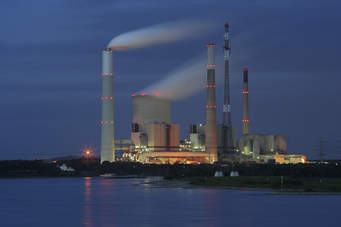

Solutions of water pollution:
Dealing with water pollution is something that everyone (including governments and local councils) needs to get involved with. Here are a few things you can do to help. Learning about the issue (like you are doing) is the greatest and most important step to take. Here are a few more:
 Never throw rubbish away anyhow. Always look for the correct waste bin. If there is none around, please take it home and put it in your trash can. This includes places like the beach, riverside and water bodies.
Never throw rubbish away anyhow. Always look for the correct waste bin. If there is none around, please take it home and put it in your trash can. This includes places like the beach, riverside and water bodies.
Use water wisely. Do not keep the tap running when not in use. Also, you can reduce the amount of water you use in washing and bathing. If we all do this, we can significantly prevent water shortages and reduce the amount of dirty water that needs treatment.
Do not throw chemicals, oils, paints and medicines down the sink drain, or the toilet. In many cities, your local environment office can help with the disposal of medicines and chemicals. Check with your local authorities if there is a chemical disposal plan for local residents.
Buy more environmentally safe cleaning liquids for use at home and other public places. They are less dangerous to the environment.
If you use chemicals and pesticides for your gardens and farms, be mindful not to overuse pesticides and fertilizers. This will reduce runoffs of the chemical into nearby water sources. Start looking at options of and using organic manure instead.

If you live close to a water body, try to plant lots of trees and flowers around your home, so that when it rains, chemicals from your home does not easily drain into the water.
Governments, local councils and laws:
Many governments have very strict laws that help minimize water pollution. These laws are usually directed at industries, hospitals, schools and market areas on how to dispose, treat and manage sewage. Do you know the laws in your country? This is the time to find out.
In many developed cities, waste or sewage treatment is very efficient, and designed to minimise pollution of water bodies.
There are also lots of organizations and groups that help educate people on the dangers of water pollution. It is always great to join these groups, because they regularly encourage other members of their communities to have a better attitude towards water.